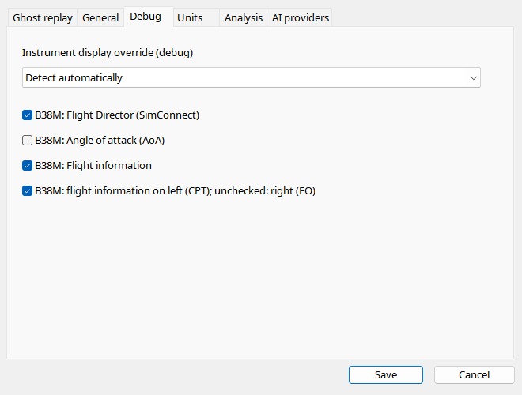

Leave Automatic for normal analysis: ICAO and recorded data select the layout. Override compares renderers rather than changing aircraft identity. Switching a flight between six-pack, generic PFD, B38M and A320 cannot provide missing SDK data. B38M options control flight information, CPT/FO side, AoA and FD. Disable FD when an addon does not populate standard guidance commands despite its FD switch being on.
| Option / action | Behavior and limitations |
|---|---|
| Automatic | Selects the frame from the recording. Override cannot convert missing telemetry into another aircraft's SDK. |
| Family | GA analog, GA glass, classic airliner, generic PFD, B38M PFD/EICAS or A320 PFD/ECAM. Flight metadata remain unchanged. |
| Information panel | Recorded flight number, squawk, registration, SELCAL and time; enabled by default. |
| Side | Checked = left/CPT; unchecked = right/FO. Independent of panel visibility. |
| AoA | Off by default. Requires valid recorded incidence and applicable ground inhibit. |
| Flight Director | On by default; uses recorded standard SimConnect commands. Disable if the addon supplies meaningless values. |
